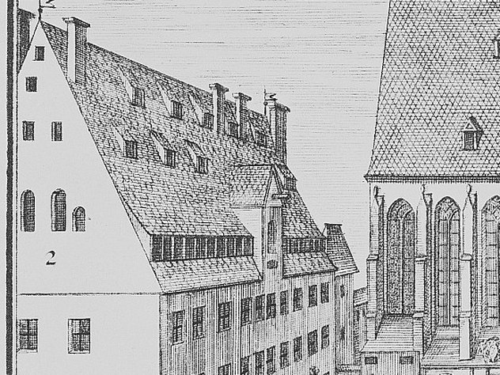
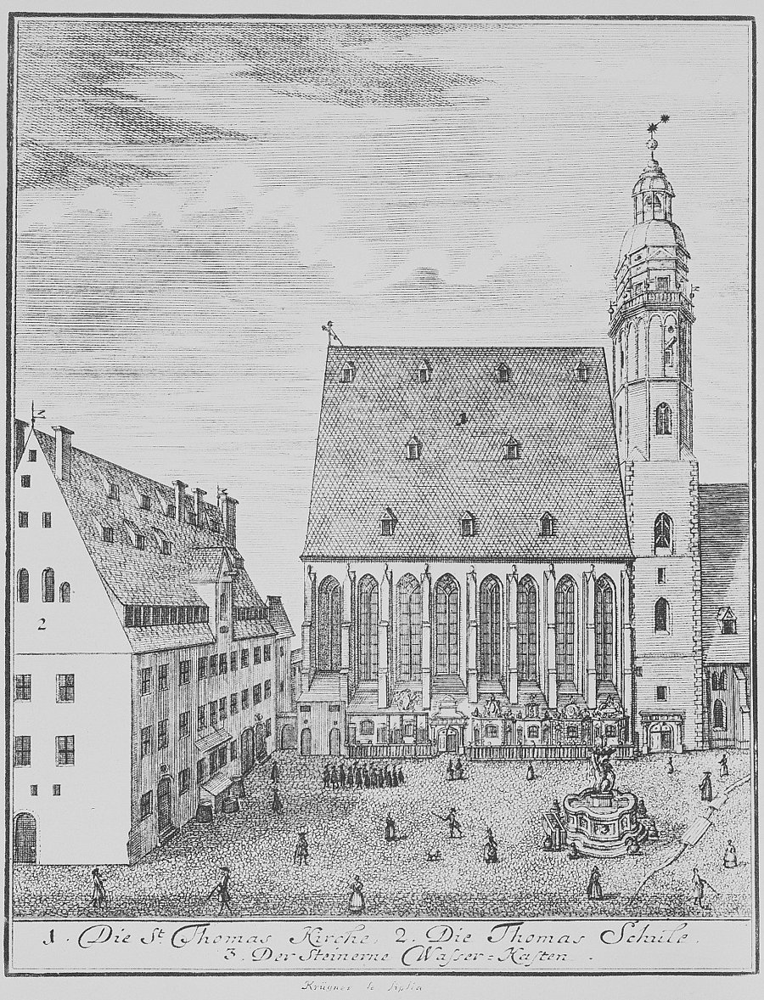
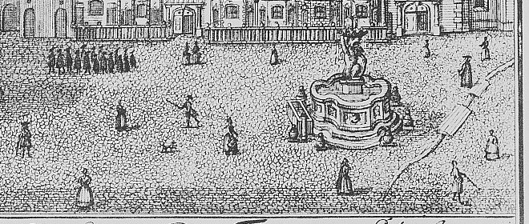

Adding and Subtracting Fractions, Part 1
Grade 4 preview: today you add and take away fractions that have the same denominator, using tiles first. Dimensions Math 3B, Chapter 10, Lesson 7 · Adding and Subtracting Fractions, Part 1

Leipzig, Germany · about 300 years ago

What happens when you add or take away pieces that are the same size?
Three-elevenths and four more elevenths make seven-elevenths. You count the pieces. They are still elevenths.
You will…
- Add fractions with the same denominator by counting the pieces.
- Take away fractions with the same denominator by counting back.
- Cut 1 whole into pieces so you can take some away.
Why Bach?
A real print of Saint Thomas Church and School in Leipzig, made in 1723. That is the year Bach moved there. The building marked 2 is the school. Bach lived there with his family, and he taught the boys who sang in his choir. The second picture is a close look at the square in front of the church.


Almost every Sunday, Bach's choir sang a cantata. Each singer and each player needed their own part, written out by hand. There were no copy machines! Anna Magdalena Bach and some of Bach's students copied many of these parts. In every measure, the notes have to add up to exactly one whole.
Today's math: a measure is one whole. Sixteen sixteenth notes fill it, so each one is a sixteenth. To add notes, count the sixteenths. To take some away, count back.
Today you'll count pieces up and back a lot. Warm up with these facts. Type each answer, then check. You can fix any answer and check again.
A fraction counts pieces
One bar cut into 7 equal pieces. Five of the pieces are shaded.
Think: Copying Night
🔨 Do · ✏️ WriteAnna Magdalena dips her quill and copies one measure of the soprano part. Sixteen sixteenth notes fill the measure. She writes five of them. Then she writes nine more. Oh no! A drop of ink falls and smudges three notes. She scrapes them off.
The navy bar is one whole measure. The bar under it is the measure Anna Magdalena is copying. Each tile in the tray is one sixteenth note: one-sixteenth of the measure.
Write the first notes
Drag 5 one-sixteenth tiles from the tray into the measure.
Write nine more
Drag 9 more one-sixteenth tiles into the measure.
How much is written?
The ink drop
Tap 3 tiles in the measure to smudge them out.
How much is left?
Tell how you counted
Sixteenths are the unit. Add sixteenths by counting on. Take sixteenths away by counting back. The pieces never change size.
Same-size pieces: count them, and keep the unit
49 + 39 = 79
79 − 59 = 29
- Check the denominators. The same denominator means the pieces are the same size. The denominator names the unit, like apples or candles.
- To add, count on. 4 ninths + 3 ninths = 7 ninths. Add the numerators. The unit stays ninths. The answer is the sum.
- To take away, count back. 7 ninths − 5 ninths = 2 ninths. Subtract the numerators. The answer is the difference.
- Taking away from 1 whole? Cut the whole into pieces first. 1 whole = 9 ninths.
Four ways to see 4 ninths + 3 ninths
Your Turn: The Alto Part
🔨 DoA student copies the alto singers' part. One page holds 7 lines of music. He copies 4 lines before supper and 2 more lines after supper. How much of the page has he copied?
The navy bar is 1 whole page. The bar under it is the page he is copying. Each tile is one line: one-seventh of the page.
Before supper
Drag 4 one-seventh tiles onto the page.
After supper
Drag 2 more one-seventh tiles onto the page.
Find the sum
Juno Adds the Denominators
🔨 Do · ✏️ WriteThe violin part has 9 pages. Anna Magdalena copies 2 pages, and a student copies 6 pages. That is two-ninths and six-ninths of the part. Juno says, "2 + 6 = 8 and 9 + 9 = 18, so they copied eight-eighteenths."
The navy bar is the whole violin part. The bar under it is cut into ninths, one tile for each page.
Anna Magdalena's pages
Drag 2 one-ninth tiles onto the bar.
The student's pages
Drag 6 more one-ninth tiles onto the bar.
Find the sum
Look at Juno's answer
Help Juno
Kai Takes Away the Denominators
🔨 Do · ✏️ WriteThe students copy by candlelight. One candle is eleven-twelfths as tall as a new candle. By midnight, four-twelfths of it burns away. Kai says, "11 − 4 = 7 and 12 − 12 = 0, so seven over zero is left."
The navy bar is 1 whole new candle. The bar under it is the candle tonight: 11 of its 12 pieces are still there.
Burn the candle
Tap 4 tiles to take away the part that burned.
Find the difference
Check Kai's denominator
Help Kai
Leo and the New Ink Pot
🔨 Do · ✏️ WriteA new pot of ink is 1 whole. Tonight the copyists use four-ninths of it. Leo says, "I can't take ninths away from 1. There are no ninths in 1."
The navy bar is 1 whole pot of ink. The bar under it is the same pot, not cut into pieces yet.
Cut the whole
Press ✂ Cut 1 whole into ninths.
Name the whole
Use the ink
Tap 4 tiles to take away the ink they used.
Find the difference
Help Leo
The Midnight Bread
🔨 Do · ✏️ WriteThe copyists share a loaf of bread. Ten-elevenths of the loaf is on the table. They eat three-elevenths. Later they eat two-elevenths more. How much bread is left?
The navy bar is 1 whole loaf. The bar under it is the loaf on the table, cut into elevenths.
First bite
Tap 3 tiles to take away the bread they ate first.
Later
Tap 2 more tiles to take away the bread they ate later.
Find what is left
Tell how you know
The Measure Filler
🔨 Do · ✏️ WriteIt is almost morning. Three measures of the flute part are only partly copied. Fill each one so Sunday's music keeps a steady beat.
Three measures. The dark tiles are notes already written. The empty space still needs notes. Each tile in the tray is one sixteenth note.
Problem 1 · Fill the measures
Drag one-sixteenth tiles into each measure until all three are full.
Problem 1 · Listen
Press ▶ Play the measures.
Problem 2 · Write the math
Problem 2 · Tell how you knew
Prove It
✏️ WriteProblem 3 · Prove It
Two Nights of Candlelight
A new candle is 1 whole. It burns two-elevenths on Saturday night and five-elevenths on Sunday night. How much is left?
Turn in your work
- Check the list below. Jobs 1 to 8 are required. The Bonus is optional.
- Press 📋 Gather my answers, then 📋 Copy. Or press 🖨️ Print or save as PDF.
- Open this lesson's assignment in Canvas.
- Paste your answers (or upload your PDF and journal photo), then press Submit.
All my answers
Your answers and your work on this page save on this device as you go.
Before you turn in
- I finished Jobs 1 to 8.
- I drew one adding problem and one take-away problem with tiles in my math journal.
- I named the unit in every answer.
- I tried the Bonus. (optional)
Lesson 3.10.07 · Adding and Subtracting Fractions, Part 2
Today you added and took away pieces of the same size. Next, you'll do it again, then write each answer in simplest form.
Musette in D, from Anna Magdalena's notebook
A happy dance with a low note that keeps humming underneath, like bagpipes. It is played twice through.
Musette in D major, BWV Anhang 126, from the Notebook for Anna Magdalena Bach (1725). Composer unknown. Played with a harpsichord sound made for this page from the Mutopia Project's public-domain MIDI file.